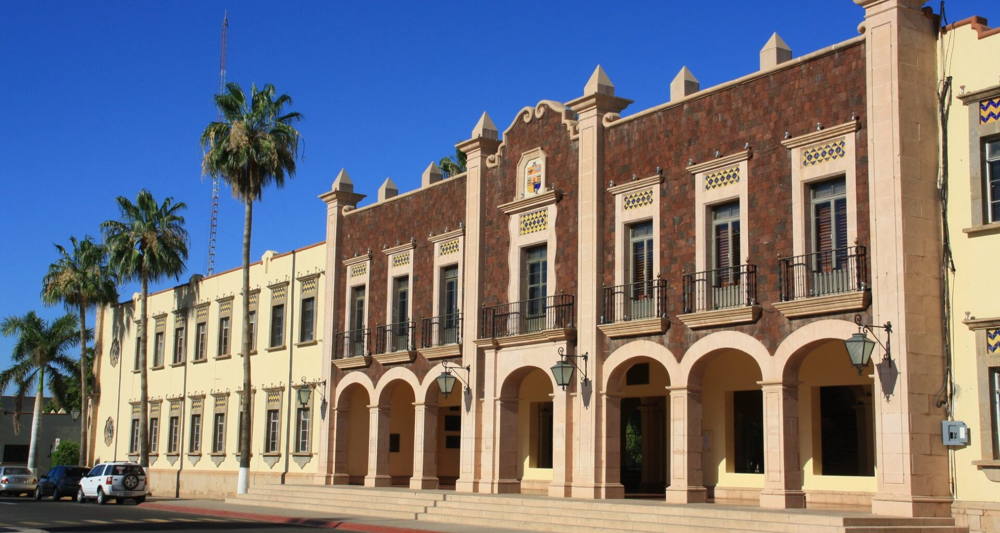
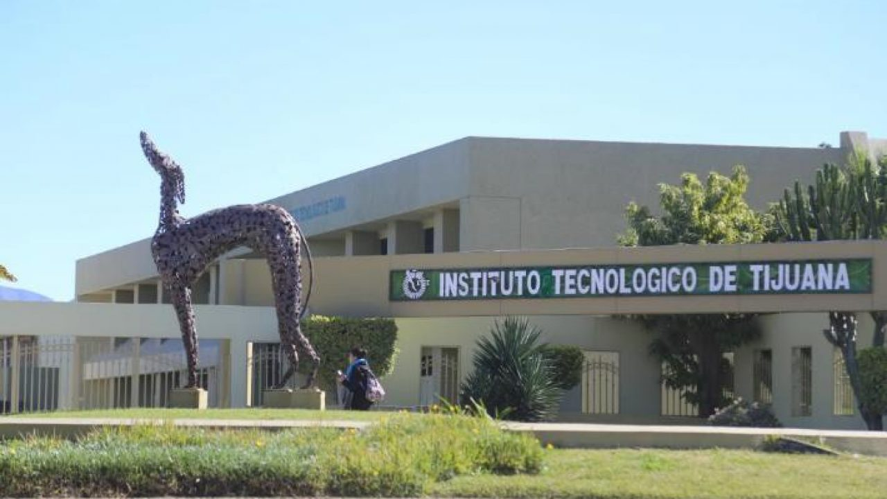

La Universidad Autónoma de Baja California (UABC) es una de las principales instituciones de educación superior en el noroeste de México. Fundada en 1957, UABC tiene su sede principal en Mexicali, la capital del estado de Baja California, y cuenta con campus en Tijuana y Ensenada.
UABC ofrece una amplia gama de programas académicos en diversas áreas del conocimiento, incluyendo ciencias, ingeniería, humanidades, artes, ciencias de la salud, y ciencias sociales. Su compromiso con la calidad académica se refleja en la acreditación de muchos de sus programas por organismos nacionales e internacionales.
Además, la universidad se destaca por su enfoque en la investigación, la cual se desarrolla en colaboración con instituciones tanto nacionales como extranjeras. UABC también es conocida por su activa participación en proyectos comunitarios y de extensión universitaria, reforzando su vínculo con la sociedad y su compromiso con el desarrollo regional.
Los estudiantes de UABC tienen acceso a una serie de servicios y oportunidades, incluyendo intercambios internacionales, becas, y actividades culturales y deportivas.
Universidad de Sonora (UNISON)

La Universidad de Sonora, comúnmente conocida como UNISON, es una de las universidades públicas más importantes del noroeste de México. Fundada en 1942, su campus principal se encuentra en Hermosillo, la capital del estado de Sonora.
UNISON ofrece una amplia variedad de programas académicos a nivel de licenciatura y posgrado en áreas que incluyen ciencias exactas y naturales, ciencias sociales y administrativas, humanidades y bellas artes, y ciencias de la salud. La universidad es reconocida por su infraestructura de investigación y su contribución a la generación de conocimiento, destacándose en campos como la biotecnología, la agricultura, y la minería.
Además de su sólida base académica, UNISON participa activamente en la vida cultural y social de la región. Organiza eventos culturales, conferencias y actividades deportivas que fomentan un ambiente dinámico y enriquecedor para sus estudiantes.
UNISON también promueve la vinculación con el sector productivo y la comunidad, buscando siempre el beneficio mutuo y el desarrollo sustentable de la región.
Instituto Tecnológico de Tijuana (ITT)

El Instituto Tecnológico de Tijuana (ITT) es una institución de educación superior enfocada principalmente en la formación de profesionales en áreas tecnológicas e ingenieriles. Fundado en 1971, el ITT se encuentra en la ciudad de Tijuana, Baja California.
El ITT se ha consolidado como un centro educativo de prestigio en el ámbito tecnológico, ofreciendo programas de licenciatura y posgrado en ingeniería, tecnología de la información, administración y gestión empresarial, entre otros.
La institución se destaca por su enfoque práctico y orientado a las necesidades de la industria, preparando a sus estudiantes para enfrentar los desafíos del mundo laboral con competencias técnicas sólidas y una mentalidad innovadora.
El ITT promueve la investigación aplicada y el desarrollo tecnológico. A través de colaboraciones con empresas locales e internacionales, facilita proyectos de innovación y transferencia de tecnología.
El Instituto Tecnológico de Tijuana ofrece a sus estudiantes oportunidades de desarrollo integral, incluyendo actividades culturales, deportivas y programas de intercambio, contribuyendo a una formación equilibrada y completa.